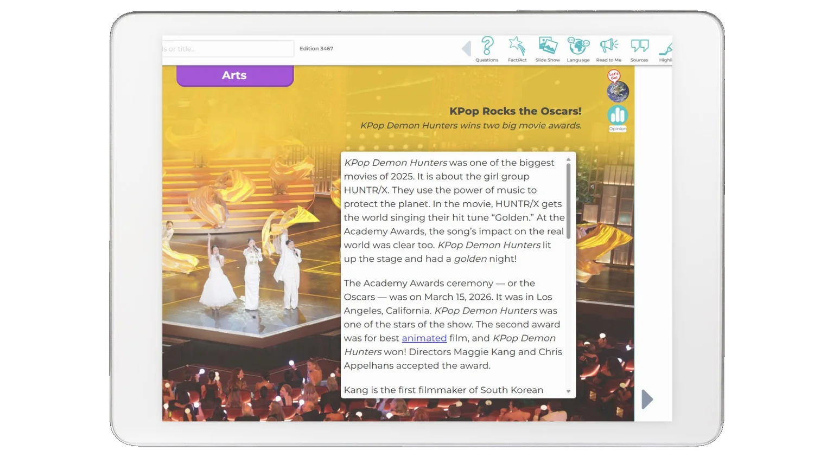
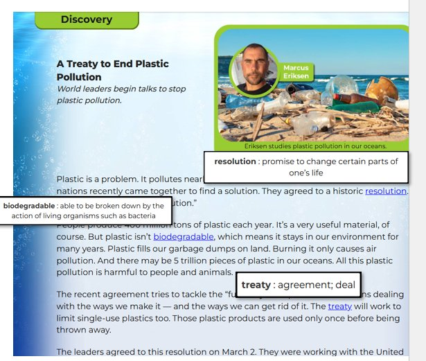
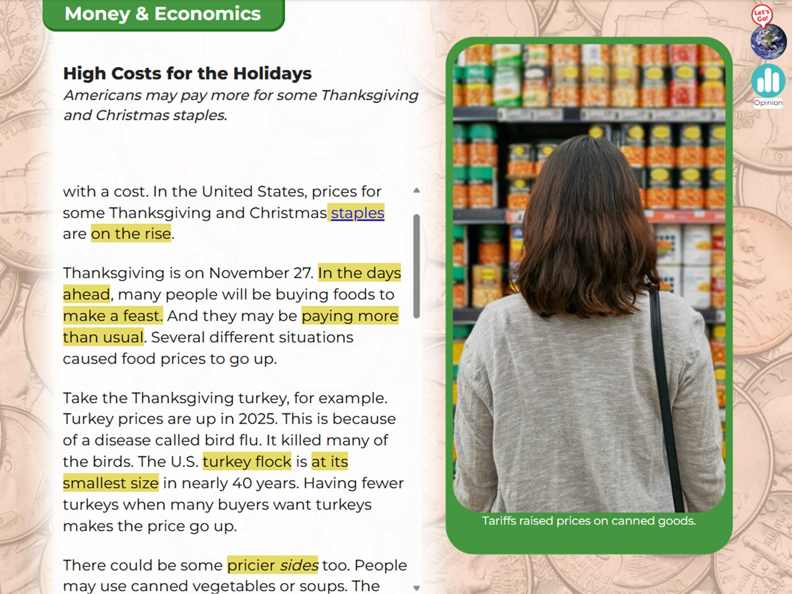
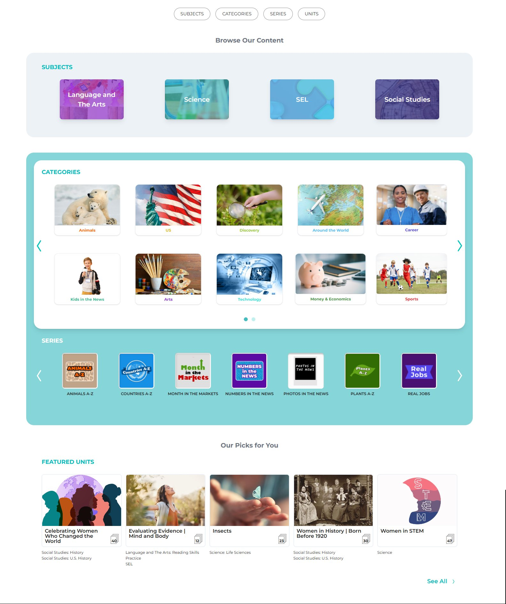
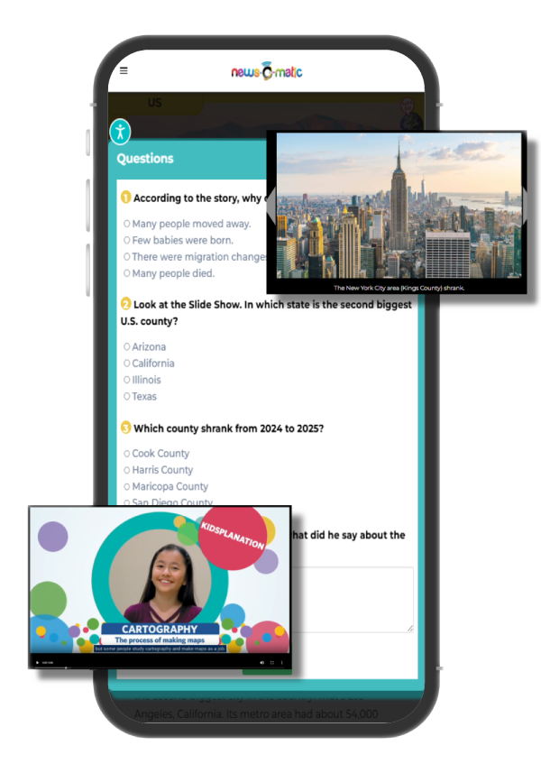
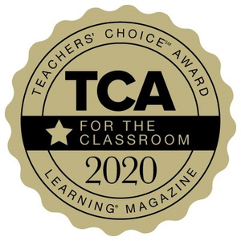
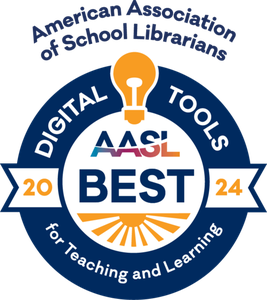

스토리북 중심의 영어 읽기에서 한 단계 더 나아가, 실제 영어뉴스로 논픽션 리딩을 확장해보세요.
매일 업데이트되는 영어뉴스로 배경지식, 비문학 독해력, 시사 어휘를 함께 키우는 학원 리딩 프로그램을 위한 영어뉴스 콘텐츠입니다.
뉴스오매틱을 더하면, 우리 학원 리딩 수업이 이렇게 달라집니다.
스토리북·원서 중심 수업을 실제 영어뉴스 기반 논픽션 리딩으로 확장해, 학부모에게 보여줄 수 있는 차별화 포인트를 만듭니다.
실제 미국 교실에서 활용되는 방식의 자료로 리딩 수업을 더 탄탄하게 운영할 수 있습니다.
뉴스오매틱 하나로 정규 수업, 방학 특강, 심화 독해반, 과제형 리딩 프로그램까지 구성할 수 있습니다.
"우리 학원은 논픽션 리딩까지 합니다"라는 메시지가 상담과 재등록 설득력을 높입니다.
초등 고학년·중등으로 갈수록 비문학·논픽션 독해와 배경지식이 영어 실력을 가릅니다. 픽션·스토리북으로 쌓은 읽기 습관 위에, 매일 살아있는 실제 뉴스 논픽션을 더합니다.
실제 뉴스로 중심 내용·세부 정보·사실과 의견을 구분하는 힘을 기르고, 비판적으로 정보를 읽는 사고력을 훈련합니다.
비판적 독해과학·환경·사회·문화·진로 이슈를 영어로 접하며 폭넓은 배경지식과 시사 어휘를 쌓습니다.
교과 연계읽기 → 퀴즈 → 요약 → 의견 쓰기·발표로 이어지며 내신 서술형·논술형 사고력을 함께 준비합니다.
서술·논술형 대비픽션·스토리북으로 쌓은 읽기 흥미와 습관 위에, 뉴스오매틱이 논픽션·배경지식·시사 어휘를 더합니다. 두 프로그램이 만나 균형 잡힌 영어 리딩이 완성됩니다.
픽션 리딩 보완픽션으로 읽는 재미를 익혔다면,
논픽션으로 읽는 힘을 키울 차례입니다.
픽션 리딩 + 뉴스오매틱이 함께 만드는 균형
사회, 과학, 기술, 환경, 문화, 진로 등 교과 연계 시사 기사를 월~금 5편씩 업데이트. 교과서가 따라가지 못하는 세상을 영어로 먼저 만납니다.
사회 현상과 연결되는 실제 기사로 교과서 지식을 현실에 적용합니다.
읽기·듣기·보기가 한 기사 안에 통합된 멀티모달 영어 학습 경험.
독해력을 즉시 점검하고 선생님 대시보드에서 학생별 응답을 실시간 확인.
클릭 몇 번으로 기사 선정 → 마감일 설정 → 반 배포 완료. 인쇄·PDF 배포.
뉴스오매틱은 미국 전문 저널리스트가 직접 작성한 실제 뉴스입니다.
원어민이 일상에서 쓰는 자연스러운 단어 선택과 문장 구조를 그대로 배울 수 있습니다.


단어를 클릭하면 문맥에 맞는 정의가 팝업으로 즉시 표시됩니다. biodegradable, resolution, treaty 같은 고급 어휘도 읽는 흐름을 끊지 않고 바로 이해할 수 있습니다.

초등 필수 표현부터 중등 내신 서술형, 수능 비문학 배경지식까지 — 하나의 뉴스로 폭넓게 커버합니다.
뉴스오매틱의 모든 기사는 미국 공교육 표준에 따라 교과와 학년별로 체계적으로 분류되어 있습니다. 강사는 수업 진도에 맞는 교과와 주제만 선택하면 바로 활용할 수 있습니다.
교과에 맞는 기사, 선택만 하세요.

학습 수준에 맞는 클래스를 운영하되, 레벨별 교재를 따로 준비할 필요가 없습니다. 같은 주제를 5단계 난이도로 제공하니까요.
상·중·하 반을 운영하려면 같은 주제라도 레벨별 교재를 각각 준비해야 합니다. 교재 선정·구매부터 수업 준비까지 강사의 부담이 계속 늘어납니다.
학생은 자기 레벨에 맞는 기사로 학습하지만, 핵심 내용과 주제는 동일합니다. 그래서 상·중·하 반이 각자 레벨로, 같은 주제로 수업을 진행할 수 있습니다.
The Earth has trees. There are fish. There is soil too. But there is a limited number of these.
Earth's natural resources are finite, and humanity's consumption rate has increasingly outpaced the planet's capacity for regeneration.
짧고 단순한 문장 중심. 기본 정보 추출 가능. 영어가 약한 학생도 같은 주제로 수업에 참여할 수 있습니다.
일상적 주제 텍스트 이해, 간단한 정보 요약 가능. 초등 고학년·중등 입문 단계에서 시작하기 좋은 레벨.
다양한 어휘와 문장 구조 포함. 대화와 단문 중심 텍스트를 비교적 쉽게 소화하는 수준.
긴 문단과 복잡한 문장 구조. 세부 정보와 암시된 의미 파악. 중등 상위권 독해와 고등 진학 대비에 효과적입니다.
전문 주제와 고급 어휘. 실제 영자신문 원문 수준으로 중등 최상위권·영어 심화 학습자에게 적합합니다.
기사 독해부터 듣기, 퀴즈, 요약, 의견 쓰기까지. 뉴스오매틱 하나로 논픽션 리딩의 전 과정을 완성합니다.
사회·과학·기술·환경·문화·진로 등 교과 연계 시사 기사를 매일 5편 업데이트. 교과서 밖 살아있는 지식을 영어로 접합니다.
하나의 기사가 Lexile 300L~1,200L까지 5가지 난이도로 제공됩니다. 같은 반에서 같은 주제로 각자 수준에 맞게 읽습니다.
원어민 Read-to-Me 음성 듣기, Slide Show 시각 자료, Video까지 한 기사 안에 통합. 읽고·듣고·보는 멀티모달 학습.
Comprehension Questions와 Fact/Act 퀴즈로 독해력을 즉시 점검. 선생님은 대시보드에서 학생별 응답 현황을 확인합니다.
영어 기사를 스페인어·프랑스어·아랍어·중국어·독일어로 비교하며 읽기 가능. 언어 간 어휘·표현 차이를 자연스럽게 체득합니다.
선생님이 기사를 선택해 반별·학생별로 마감일과 함께 배포. 학생은 알림으로 접속해 읽고 문제를 풀면 끝. 인쇄·PDF 배포.
뉴스오매틱의 한 기사가 완전한 한 시간 논픽션 리딩 수업이 됩니다. 비판적 사고력 훈련부터 내신 서술·논술형 글쓰기까지 자연스럽게 연결됩니다.
Video·Slide Show로 주제 배경 지식 활성화. 영어 듣기와 시각 이해 동시 훈련.
내 레벨에 맞는 기사 선택 후 원어민 Read-to-Me와 함께 집중 독해.
Comprehension Questions로 이해도 확인. Fact/Act로 사실과 의견 구분 훈련.
요약·의견 작성 워크시트로 글쓰기 완성. 논술·내신 서술형 준비까지 직결.

뉴스오매틱은 기사만 주는 게 아닙니다. 강사가 바로 활용할 수 있는 수업 자료와 활동 콘텐츠로 Reading → Discussion → Writing → Presentation으로 이어지는 뉴스 기반 영어 수업을 완성합니다.
아래 자료가 기사마다 들어 있어, 강사는 별도 준비 없이 위 수업을 바로 운영할 수 있습니다.
학원 규모, 예산, 목적에 따라 유연하게 선택할 수 있습니다. 어떤 방식으로 시작하든 담당자가 함께 설계해드립니다.
픽션으로 읽기 습관을 기른 학생들이 논픽션 기사까지 자연스럽게 확장할 수 있는 자율 리딩 프로그램입니다.
여름·겨울 방학 특강으로 편성해 집중 운영. 스토리북과 묶어 픽션+논픽션 특강 패키지로 만들기에 최적입니다.
영어 교과 수업의 읽기 자료로 연계. 선생님은 기사를 지정해 배포하고 대시보드에서 학습 현황을 확인합니다.
내신 서술형과 심화 독해를 중심으로, 수능형 사고력까지 자연스럽게 연결되는 리딩 프로그램입니다.
고정된 영어 원서 플랫폼과 달리, 뉴스오매틱은 매일 새로운 현실 세계를 영어로 만나고 논픽션 리딩 전 과정을 지원합니다.
뉴스오매틱 공식 홈페이지(newsomatic.org)에 게재된 미국 공교육 현장 선생님들의 실제 후기입니다.
뉴스오매틱은 저희 교실에서 없어서는 안 될 훌륭한 자료입니다. 학생들은 문해력은 물론 과학적 지식과 비판적 사고력까지 동시에 키우고 있으며, 수천 가지의 논픽션 텍스트를 손끝에서 바로 접할 수 있습니다.
교육적이고, 사용하기 쉬우며, 버튼 하나로 다양한 레벨에 맞게 조정할 수 있었습니다. 관련성 높은 주제를 다루면서도 재미있었습니다. 아이들이 다른 기사들도 더 읽고 싶다며 토론하고 싶어했을 정도입니다.
뉴스오매틱은 시사를 접하고 비판적 사고를 기르며 글로벌 감각을 키우는 데 신뢰할 수 있고 흥미롭고 접근하기 쉬운 플랫폼입니다. 능동적이고 호기심 있는 학습자를 키우고자 하는 모든 교실에 강력히 추천합니다.
학생들이 자신의 읽기 수준에 맞는 텍스트를 읽고 내용과 연계된 문제로 이해도를 점검할 수 있습니다. 선생님에게는 학습을 지원하고 교육 경험을 풍부하게 하는 기사를 제공하는 훌륭한 자료입니다.
학생들이 최신 뉴스를 접할 수 있도록 뉴스오매틱을 활용하고 있습니다. 슬라이드쇼, 영상, 지도 기능이 내용 이해를 돕는 시각 자료를 제공합니다. 특히 영어 학습자(ELL) 학생들에게 큰 도움이 되는 언어 기능이 마음에 듭니다.
기술, 경제, 시사 관련 기사를 찾아 활용합니다. 학생들이 뉴스 속 내용이 자신의 일상생활과 어떻게 연결되는지 직접 이해하는 토론을 이끌 수 있어 수업에서 매우 유용합니다.
뉴스오매틱은 흥미로운 콘텐츠와 혁신적 접근 방식으로 다양한 교육기관과 전문가들로부터 그 우수성을 공식 인정받았습니다.


복잡한 행정 절차 없이 — 담당자가 처음부터 끝까지 안내해드립니다.
도입 전에 원장님들이 가장 많이 확인하시는 질문들입니다.
기사와 함께 제공되는 다양한 학습 자료를 직접 확인하고, 뉴스오매틱 수업의 흐름을 경험해 보세요.
신청 후 즉시 16,000+ 기사 전체 이용 가능